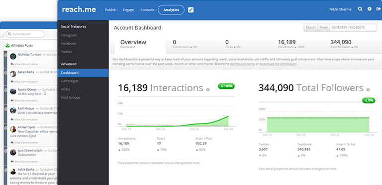

Schedule, Automate, Measure and Monitor all your social media accounts from a single dashboard
Draft, schedule and post messages across all your social channels. Shorten links with tr.im, attach photos and target specific audiences.
Use our Patent-Pending Hopper to deliver content do your audience at the best time.
Get StartedSee a full stream of messages coming into your brand across all your connected social profiles.
Set up keyword related to your brand and monitor all social channels. Have results delivered right to the reach.me inbox, and see the frequency of your brand´s keywords in your analytics report.
Get StartedGet insight into profile and individual posts, as well as trends across social media. All analytics are packaged into beatiful, presentation-ready reports that can be exported into CSVs and PDFs.
Get StartedTurn any in-bound message into a task that can be routed to the appropriate team member. Live activy updates prevent your team from replying to the same message twice.
Get StartedThe reach.me App Directory is a collection of extensions and applications brands can add to their dashbord to create a customized experience and extend reach beyond just the traditional social channels.
Don't waste another moment frustrated, reach more people today!
Get Started